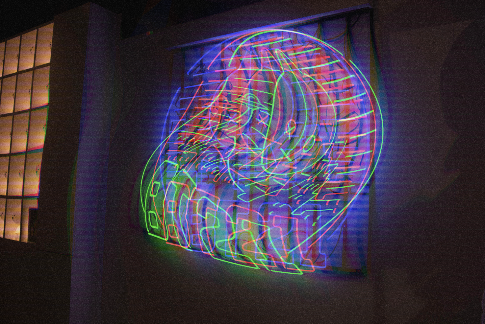
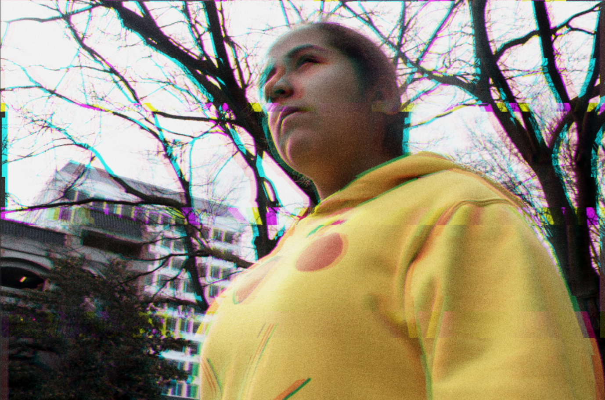
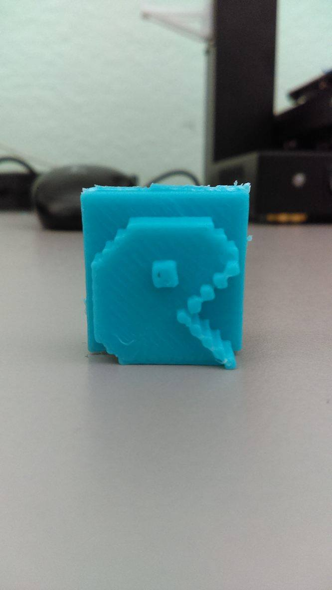

Portfolio
Altered Vision
Photoshop
This photograph of a neon sign was taken with my DSLR camera at Los Angeles. I chose to distort the neon sign to demonstrate the feeling of not belonging while darkening the surrondings to potray the loneliness someone can feel by being an outcast. To create these effects, I used the program Adobe Photoshop in order to distort the neon sign by altering the original colors and shape of it. I create several layers to vary the distortion filters and wavelengths of the glitch in order to give the illusion of the glitches moving instead of looking stacked. I then added a camera raw filter to create a grainy surface in order to give the photograph a bit more of a mysterious ambience.

Wishes
Photoshop and After Effects
This tree is located in Little Tokyo at Los Angeles. People would write their wishes on the paper and tie them onto the tree in hopes of having their wishes come true. But do they always come true? I decided to glitch this photograph using Adobe Photoshop to potray the feeling of insincerity and doubt that can rise inside someone when they hope for something great to happen to them. I moved the red and green layers of the image to make it look as if it was vibrating. After doing so, I added a Grain layer to make the writing on the papers less legible, since people's wishes should be confidential.
Am I really ok?
After Effects and Premiere Pro
This was a fun video clip I enjoyed editing. It is a timelapse video of Downtown San Jose in the area I frequently walk by to do my errands. I always feel anxious when passing by the park because there are always people there. Therefore I decided to show my what runs through my mind as I walk by. I edited this video in After Effects and moved the red, green, blue layers in order to create the distorted layers. I chose to not use sound because whenever I feel anxious, my hearing begins to lower to the point I cannot hear much.
Thoughts
Photoshop and Lightroom
I took this photograph of my little sister with my DSLR camera at a park. I added a couple of glitches to the photograph using Photoshop. Similar to the first photograph, I varied the distortion layers and wavelength in order to make a glitched appearance. However, I decided to minimize the glitch movement in order to represent the deep thought my sister was in this image. I shortened the horizontal scale of the waves and lowered the wavelengths. Using the gradient tool, I changed it to noise instead of solid in order to have more variation in the image. From there I edited the exposure of the image using Lightroom until I got to this result. I decided to call this photograph "Thoughts" was because my sister was in deep thought about her school life when I took this picture of her. The glitches represent the worries she was having while showing a calm composure.
Self Control
Processing and Premiere Pro
In this animation, I demonstrated self-control by having a large section of squares moving in a rapid speed while the smaller ones are in place. Even though the large squares seem to keep enlarging while moving rapidly, they do not overtake the whole screen, thus demonstrating self-control. Therefore, in order to make this possible, I used the commands "float", "println", and "random". For the background, I used "println" and "random(255);" in order to make a sine wave create tiny squares changing color rapidly to make it appear as they are moving. then using "void draw()" I put the size of the different set rectangles I wanted and enlarged them to take up almost half of the sketch. Luckily, even thought there is a lot of movement in my sketch, it does not crash.
Hell Duckies
Processing, Premiere Pro, Java
I created a short animation of "Hell Ducks" as a fun practice with Processing. I animated the ducks and later put it into a video using Premiere Pro. In this Processing sketch, I mainly used the commands "float" and "collide" to make the ducks move around in a bunch. To make the screen glitchy, I added a couple of orange lines along with a slightly lighter orange sine wave to give the illusion of a glitch. This sine wave is a bit difficult to notice at first but if you look closely at the top, you can see the movement of the waves. However, in order to be able to create a video out of this sketch, I had to use the code "saveFrame" in order to have the movements saved as multiple pngs in order for the program to allow me to convert it from a sketch into a video.
Sunflowers
Processing and Premiere Pro
This sketch was created with Processing. I then converted it into a video on Premiere Pro to be able to put it into my website. I decided to make the sunflower image to change the colors of the background every time the image would pass over it. I decided to enlarge the image to make it seem as a napkin wiping a surface. I used a variety of ellipse sizes to make the sine waves. In order to make the ellipse change color every time the sunflower image went over them, I used the command "mouseDragged" and "mouseMoved" and put in the colors I wanted.

MLK Library
Lightroom
I took this photograph as personal practice using my DSLR camera and edited it on Adobe Lightroom. I slightly darkened the exposure of the image since it the sunlight behind the building made the raw photograph a bit too bright. I lowered the temperature of this photograph to match with the blue tinted windows and give it a cool crisp appearance. I focused my highlights towards the the top of the feelings in order to give it more of a dynamic feeling instead of looking like a static photograph. I changed the a little bit of the clarity just to make some parts of the photograph more clear.
Evil Totoro
Photoshop and Illustrator
Since I really enjoy Studio Ghibli and paranormal stories, I decided to merge them together into a gif using Adobe Illustrator and Photoshop. I choose one of my favorite Studio Ghibli movie, Totoro, and decided to make a demonic version of him based on its dark conspiracy I read a while ago. I first drew a demonic version of Totoro on Illustrator. After doing so, I went on Google to find a Totoro image to combined it with my drawing into a frame animation using Photoshop. To give it more of an eerie effect, I decided to keep some of the white background from the googled image to make the gif appear like static. I had the gif spin around in a loop to show its transformation.
Pacman 3D print
Meshlab and Minecraft
This is a 3D print I made during my Art 74 class. For this assignment, we were first required to build create a structure of our choice in the game Minecraft. For my structure, I decided to build PacMan since it is one of my favorite childhood games. When building my PacMan structure, I had to make sure I did not made it too thin or it would not print well. When I finished, I then extracted the image and inserted to Meshlab to resize my structure so it would not be too tiny to print. When finished, I began to print my structure and after an hour, my PacMan structure was completed. I had to cut some remaining filament parts off to make my art piece smoother.